Javascript Arrays
John R. Williams and Abel Sanchez
Integer Arrays
Arrays in Javascript can store any kind of object eg numbers, strings etc. Here we will just store integers for compactness. We will demonstrate only the most common commands we will use. In a later lesson we will come back and discuss arrays in much more detail.
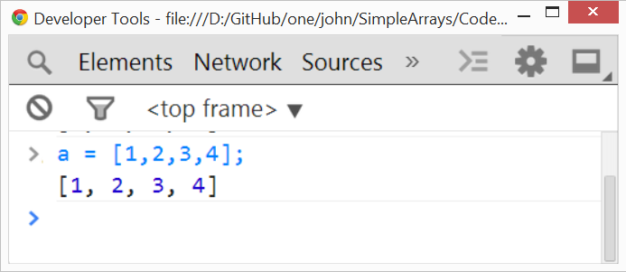
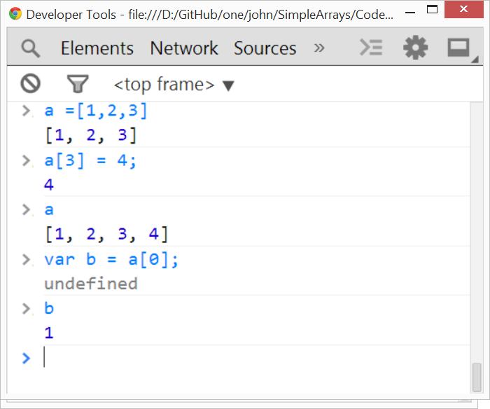
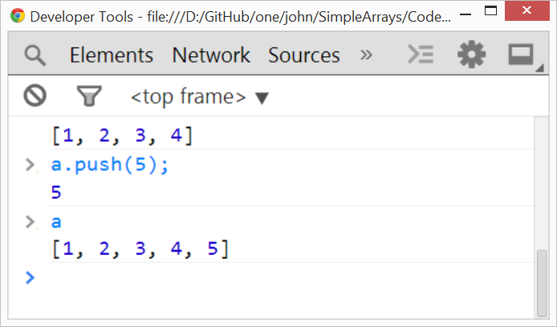
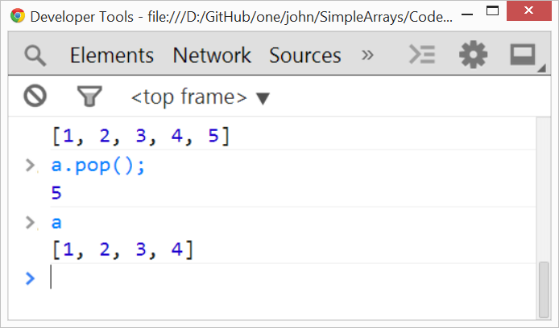
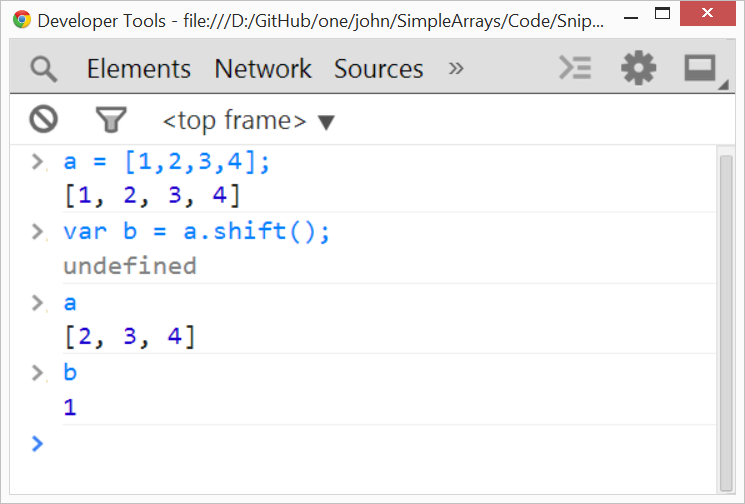
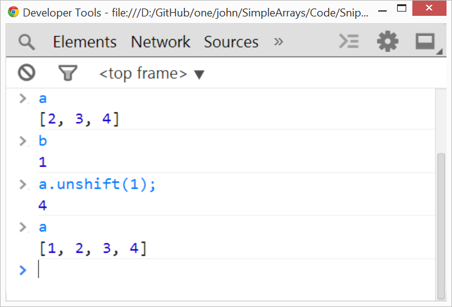
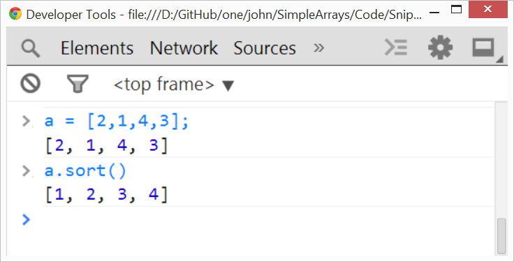
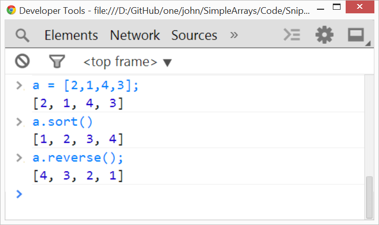
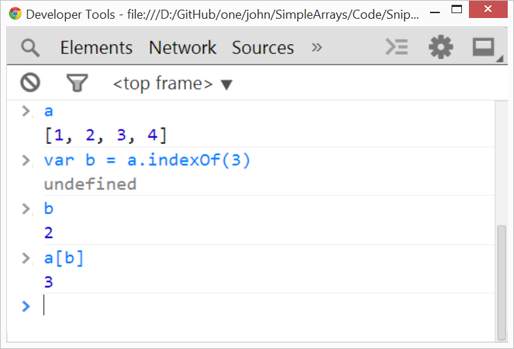
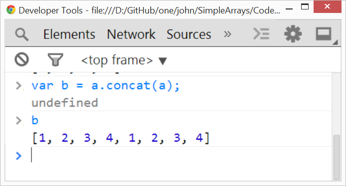
slice(start_pos, upto_end_pos)
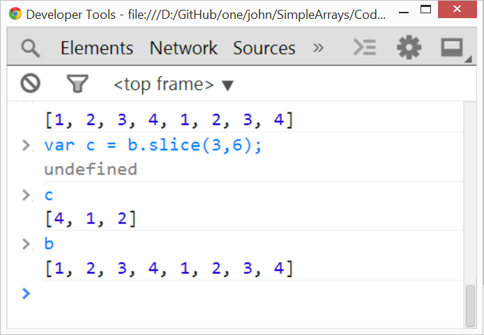
splice(start_pos, number_to_cut_out)
It is often used to remove the first element. The array can then act like a 'queue' ie splice(0,1)
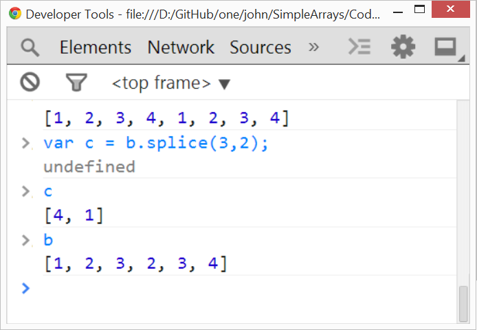
splice(start_pos, 0, elements_to_be_inserted); 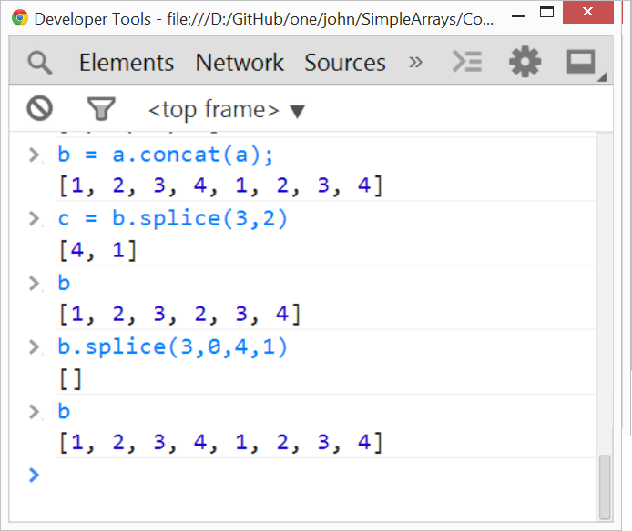

Active Learning
Download images & starter code

click on zip image above